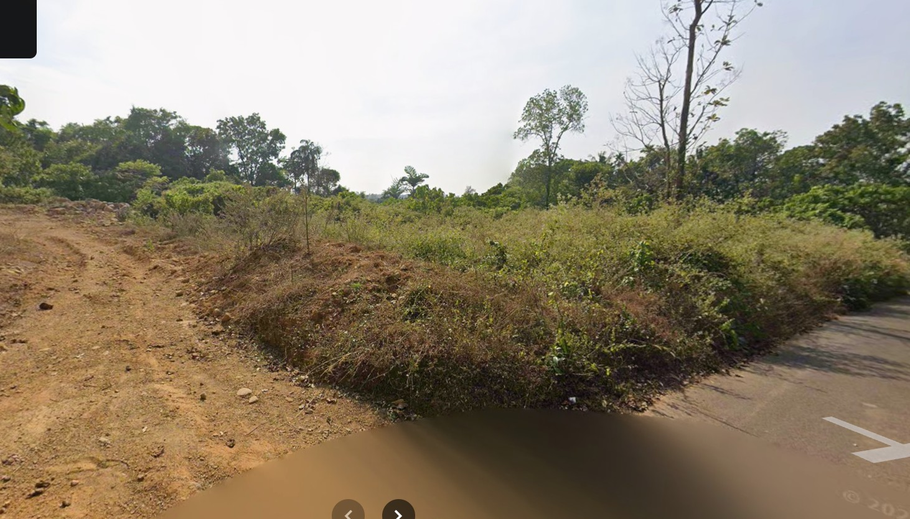
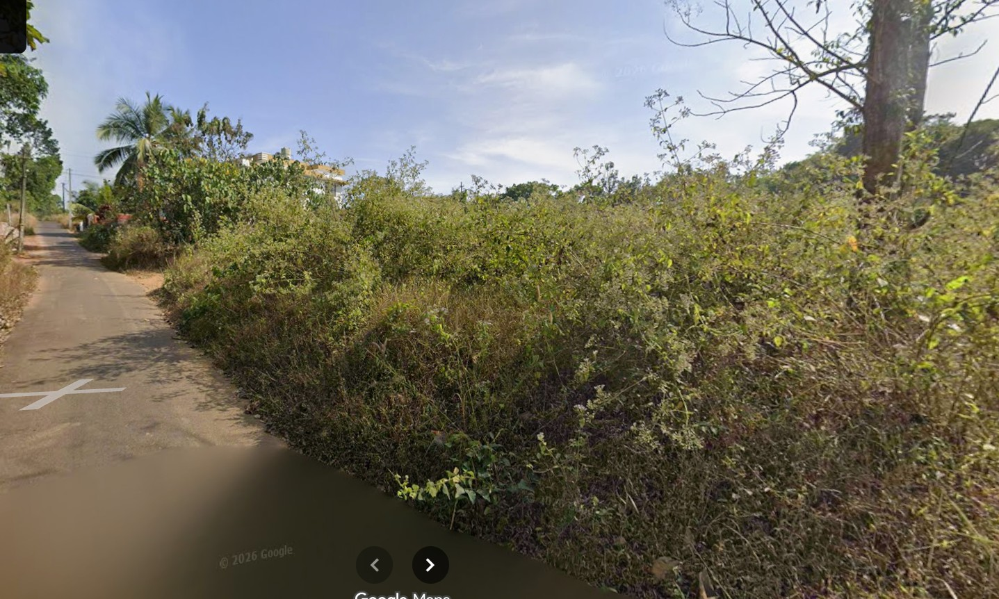
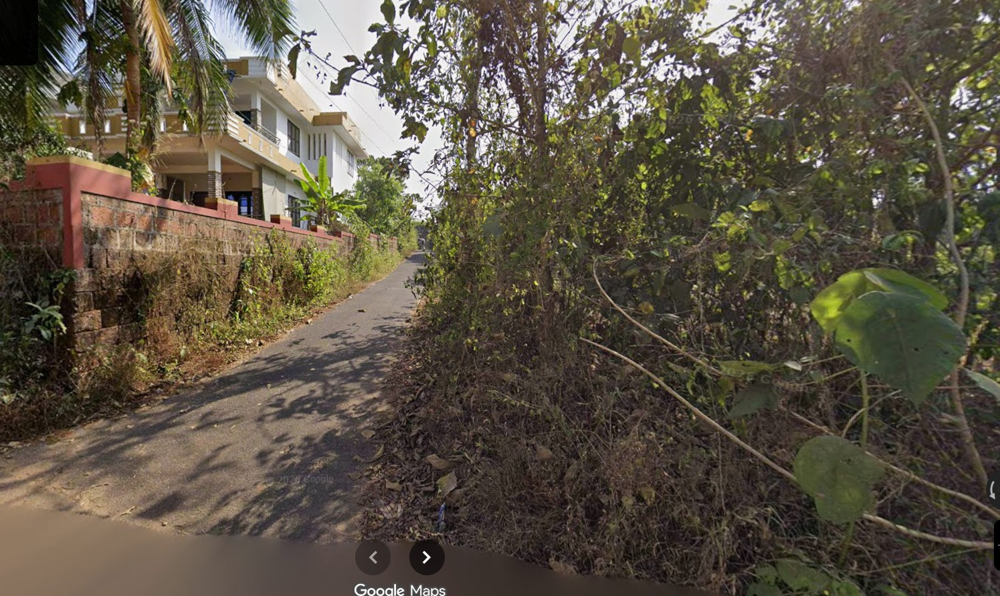
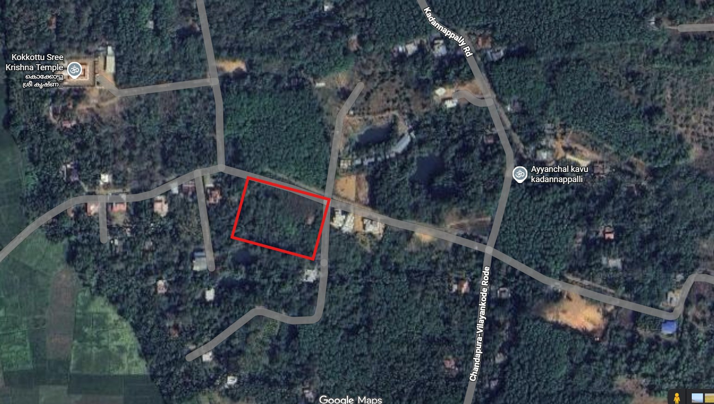

Overview
Price: ₹1.80 Cr
Size: 120 cents (52,272 sq ft / 4,856 sq m)
Location: Kadannapally, Chandapura |
View Map
Highlights
- Corner plot with access from 2 roads — ideal for subdivision or multiple entry planning
- Located near Kokkottu Sri Krishna Temple — strong residential appeal
- Peaceful and green neighborhood — ideal for villa or resort-style development
- Close to poultry farm and open land — adds to natural surroundings
- 650m from Cheruthazham–Puttur–Peringome main road
- 500m from AKG Mandiram — good local connectivity
- Square-like layout — efficient land utilization
Investment Insight
This is a multi-purpose land parcel with strong development flexibility.
- Suitable for villa community, resort concept, or residential layout
- 2-road access enables subdivision into smaller plots
- Competitive pricing at ₹1.5 lakh per cent
- Ideal for long-term appreciation in a growing micro-market
A great opportunity for buyers looking for large, flexible land with multiple exit strategies.